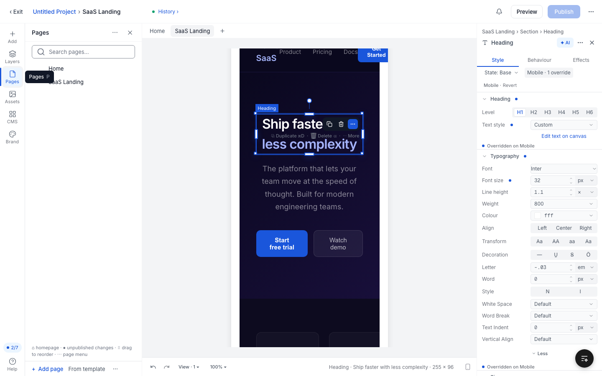
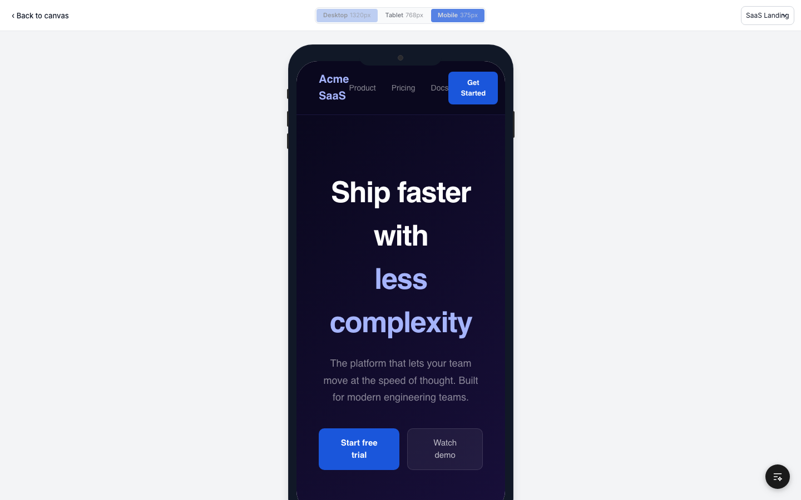
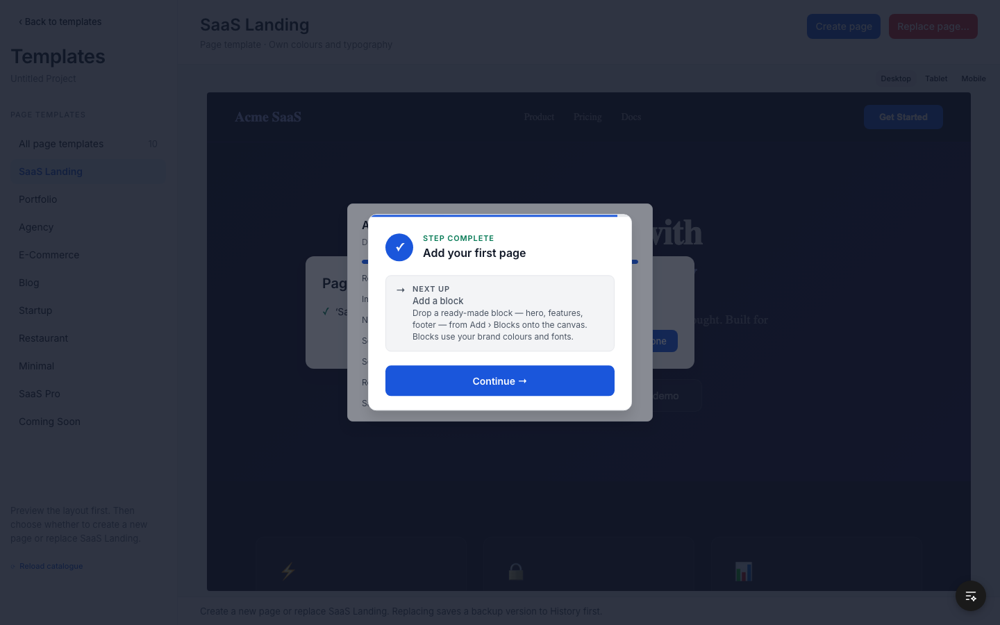
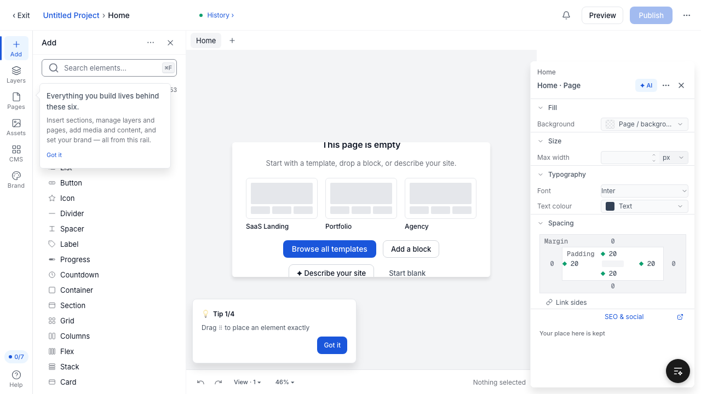

Evidence highlights








Buildrick UI/UX audit — 10 October 2026
Status: editor audit report complete for the tested scope. 25 findings: 7 High, 16 Medium, 2 Low. These are findings, not 25 independent root causes. Fresh browser evidence; no implementation changes.
The largest gap is confidence in the editing loop: inspector values, canvas output and preview must agree. Visual refinement matters, but polishing the chrome alone will not resolve this. The strongest next priorities are responsive parity, accurate inspector state, coordinated onboarding and keyboard isolation of full-page views.
Read the prioritized action plan for recommended changes and acceptance criteria. Open the visual report for a readable version with screenshot links.
Scope and evidence
Local editor demo at http://localhost:5050, Chromium. Initial viewport 1280×720; desktop follow-up 1440×900. Dashboard http://localhost:3000 redirects to authentication. Authenticated dashboard, publishing and real collaboration remain outside verified coverage. Development startup time is not a production performance measurement. Existing historical audits are context only, not current proof.
Repository baseline: main, commit df60cf9ec. Vite development build, not deployed production. All editing used a disposable local demo project. Browser-tool timeouts and a session restart occurred; these are excluded from product findings. A separate Playwright session completed the remaining browser checks. The visible Agentation development widget is excluded from production UI findings.
High means a core-task, reliability or access problem; Medium means recurring confusion or avoidable task friction; Low means limited consistency/polish cost. Design judgments are explicitly labelled. No P0/data-loss claim is made. Findings are not a WCAG certification or exhaustive proof that no other bugs exist.
Findings in capture order
UX-01 — Empty-page introduction clips at laptop size (High, observed)
At 1280×720 on first launch, the top of “This page is empty” and the bottom row containing “Describe your site” / “Start blank” are clipped by the introduction card. This makes the primary start experience look broken and reduces access to alternatives. Evidence: initial screen. Reproduction: open a fresh local demo at 1280×720, inspect empty canvas before adding content.

Confirmed again in an independent fresh browser context: repeat capture.
UX-02 — Two onboarding tips compete with the first task (Medium, observed design issue)
The rail explanation overlays the Add catalogue while a second “Tip 1/4” card occupies lower canvas space; a separate 0/7 checklist is also present. The user must process three guidance surfaces before building. Evidence: initial screen. This is a hierarchy judgment, not a functional failure.
UX-03 — Named starter does not lead directly to that template (Medium, observed)
Clicking the empty-state SaaS Landing starter opens the full all-templates catalogue instead of that template's preview. The chosen intent is lost and the user must locate SaaS Landing again. Evidence: starter, result. Reproduction: click SaaS Landing in the empty state; observe “All page templates” selected.

UX-04 — Page creation stacks several blocking surfaces (High, observed)
Create SaaS Landing through the catalogue and confirm Create page. The captured result simultaneously shows a page-created dialog, a background progress/status surface and a foreground onboarding step-complete modal. The user cannot read the creation result cleanly. The success copy says “you're on it now” while the template browser is still behind it. Done subsequently returns to the editor successfully. Evidence: stacked creation feedback. Multiple feedback owners, rather than a failed creation, are the observed defect.
UX-05 — Advanced typography dominates the initial heading inspector (Medium, observed design issue)
Select the template's main heading. White Space, Word Break, Text Indent and Vertical Align are already expanded; Size begins near the bottom of a 900px screen, with Spacing below the fold. Common layout changes compete with less frequent CSS properties. Evidence: heading inspector, settled inspector. The “Less” control exists, so the issue is the default disclosure state, not missing controls.


UX-06 — Responsive editing is hidden inside a generic View submenu (High, observed design issue)
The editor's persistent bottom bar says “View · 1”, not Desktop or the active viewport width. Desktop is revealed only by opening View > Breakpoint. This hides a fundamental website-building task and leaves scope ambiguous while styling. Evidence: View menu. Breakpoint controls exist; this finding concerns access and visibility.
UX-07 — Selection toolbar and shortcut hint overlap content (Medium, observed)
Selecting the main heading places duplicate/delete/more controls over the heading area and adds a low-contrast shortcut line across the selected content. At fit zoom, selection text and handles are tiny. Evidence: selection, settled selection. The selected border is clear; the extra chrome crowds the thing being edited.
UX-08 — Layer names lose useful meaning in a narrow fixed panel (Medium, observed design issue)
In the template tree, multiple “Container” and “Section” names coexist with truncated content labels such as “Ship faster with less…”. Even a 31-layer example requires reading structure and context to distinguish generic sections. Evidence: settled layers. This is a template naming/default panel-width issue, not evidence that user renaming is unavailable.
UX-09 — Mobile font override is absent from site preview (High, reproduced twice)
Select the SaaS Landing H1, choose View > Breakpoint > Mobile, change font size from 52 to 32 and press Enter. Canvas computed font size becomes 32px. Open Preview and explicitly select Mobile: the preview iframe H1 computes to 52px. Return and repeat Preview > Mobile: same result. This undermines the core edit/check loop. Evidence: 32px canvas and inspector, 52px mobile preview. Measured canvas line-height 48px; preview line-height 78px. Publishing was not tested; do not infer published output shares this defect.
UX-10 — Line-height field disagrees with rendered typography (High, measured)
The selected heading's inspector shows line-height 1.1×, but computed canvas line-height is 48px at 32px font size (1.5×). Before the override the mobile heading also visibly has excessive line spacing. The inspector therefore cannot be relied on as a description of the current output. Evidence: inspector showing 1.1; DOM measurement recorded in UX-09. Source/root cause not investigated.
UX-11 — Preview resets device context to Desktop (Medium, observed)
Enter Preview from Mobile editing. Preview opens with Desktop 1320px selected, requiring another Mobile selection to inspect the change just made. Evidence: mobile editor, preview initial state. Device switching itself works.


UX-12 — Starter navigation does not adapt adequately at 375px (High, observed)
The built-in SaaS Landing template keeps logo, three navigation links and CTA in one tight horizontal header on mobile. The logo wraps, links crowd the CTA, and the editor view clips the top/right content. The site preview reproduces crowding without editor handles. Evidence: mobile canvas, mobile preview. This finding applies to the tested starter, not all templates.
UX-13 — Onboarding blocks the first preview with unrelated next-task UI (Medium, observed)
The first Preview triggers a centered “Step complete / Preview your site / Next up Publish” dialog over the page. The user came to inspect a change but must dismiss a milestone first. Evidence: preview interruption. Related to UX-02/04; treat these as one onboarding orchestration workstream rather than three independent root causes.
UX-14 — Override information is repeated and mislocated (Medium, observed)
Changing only font size produces “Mobile · 1 override”, a separate “Mobile · Revert” row, section dots, explanatory paragraphs and a dot next to Text style as well as Font size. The repetition pushes controls further down and obscures which property changed. Evidence: override inspector. Override and Revert affordances exist, which is a strength; their presentation needs consolidation.
UX-15 — CMS empty state leaves its main work area unused (Medium, observed design issue)
Open CMS with no collections. The center is a large empty gray region, the explanatory empty state sits on the far right, and four blue links wrap in the narrow left panel. “Create a collection” and “+ New collection” compete in distant locations. Evidence: CMS empty state. This scatters the first task instead of explaining and starting it in the main area.

UX-16 — CMS onboarding explanation conflicts with creation form (Medium, observed)
The sidebar says collections turn a spreadsheet into pages, one per row. The creation dialog says dynamic pages are optional and shows “Generate a page per entry” off. A new user receives two different models of what creating a collection does. Evidence: CMS explanation, creation form.

UX-17 — New collection opens on step 2 with step 1 marked complete (Medium, observed)
Click Create a collection directly from the empty CMS. The dialog displays Name & Type as checked and Fields as the current second step, while the collection name remains an empty input with a “Menu items” placeholder. No first step was completed in this path. Evidence: creation form. The stepper describes a journey the user did not take.
UX-18 — Brand starts with a technical token inventory instead of a usable palette (Medium, observed design issue)
First visit presents 58 tokens with code-like names, mostly Used by 0, plus overlapping concepts such as action/primary, text/text-primary and feedback-error/error. The table also includes custom-prefixed variants in its full DOM content. This requires users to understand token architecture before setting a brand. Evidence: Brand. Similar values are not proof of an implementation duplication bug; the issue is the exposed information model and unclear choice of canonical roles.

UX-19 — Global-change promise is broader than the visible usage evidence (Medium, observed copy issue)
Brand says every change applies to the site straight away, yet the selected action token says Used by 0 and the template is explicitly described elsewhere as owning its colours and typography. Users can reasonably expect a palette edit to recolour the template and see no effect. Evidence: Brand wording and usage, template preview wording captured during traversal. Actual propagation was not tested, so this is a scope-communication finding, not a broken-binding claim.
UX-20 — Asset manager has weak primary-action consistency and redundant view wording (Low, observed design issue)
The same Upload action is dark in the top bar and blue in the empty state; Grid/List is followed by another control labelled Grid (column count). These are understandable after use but add unnecessary interpretation. Evidence: asset manager. Sidebar upload and full manager are valid distinct workflows, not inherently duplicate functionality.

UX-21 — General settings opens with premature validation styling (Medium, observed)
Open Site settings > General without entering or submitting anything. Empty Site name is already bordered red with red helper text, while the footer says All changes saved. This makes a new/default project look invalid before user interaction. Evidence: General. Saved and valid are different concepts; the interface does not explain the distinction.

UX-22 — Full-page settings leaves covered editor controls in keyboard/accessibility navigation (High, reproduced)
Open Settings from Site menu. The accessibility tree still includes the covered Editor toolbar, editor sidebar and onboarding control. Press Tab after opening: focus goes through Skip to Canvas, Help and Get started before Back to canvas and Settings controls. These are not visible in the full-page settings layout. Evidence: visible settings, accessibility tree, focus sequence. Repeated opening confirmed the background toolbar remains exposed. Full assistive-technology certification was not attempted.

UX-23 — Command palette opens as an oversized catalogue (Medium, observed design issue)
⌘K opens a tall list from near the top to the bottom of a 900px viewport. Many low-frequency navigation commands appear before editing commands, with small text and a “Click a command” footer that does not teach keyboard selection. Evidence: command palette. Search exists; the issue is default ranking, density and keyboard guidance, not missing search.

UX-24 — Navigation and control presentation vary between full-page tools (Low, observed design issue)
Templates and Brand put Back to canvas at upper left; Asset library puts it at upper right; Settings uses a blue link while Brand uses a dark button. Equivalent exits require relearning position and visual treatment. Evidence: Templates, Assets, Brand, Settings. This is a cross-tool consistency problem, not a broken exit.
UX-25 — Effective text alignment is not selected in inspector (Medium, observed)
The main heading renders with measured text-align: center, while the Align radio group reports Left, Center and Right with no checked radio, and none has a clear selected appearance. Users cannot distinguish inheritance from an unset/default state. Evidence: heading inspector, runtime measurements. Confirmed again after Undo/Redo.
Coverage and working behavior
| Area | What was actually checked | Outcome / limit |
|---|---|---|
| First use | Empty state at 1280×720 twice, initial guidance, named starter | Clipping and competing guidance reproduced |
| Templates | Catalogue, SaaS preview, Create page, confirmation, success, return | Page creates; feedback stacks |
| Layers and selection | 31-layer tree, canvas H1 selection, breadcrumb, inspector | Selection sync and breadcrumbs work; naming/overlay friction |
| Styling | Mobile H1 font edit, computed size/line-height/alignment | Canvas updates; inspector/preview inconsistencies recorded |
| Undo/redo | Revert 32px override and redo | 52px then 32px correctly restored |
| Responsive | Desktop to Mobile through View menu | Device switch works; access and template adaptation issues |
| Preview | Open from Mobile, Desktop default, switch Mobile, repeat | Mobile override mismatch reproduced twice |
| Pages | Home and newly created page visible | Listing works; rename/delete/move not exercised |
| Assets | Empty sidebar and full asset library, return | Clear upload/stock entry; uploads and server persistence not exercised |
| CMS | Empty state, New collection form, cancel | Navigation/form accessible; record CRUD and bindings not tested |
| Brand | Colours, token list, usage and page preview | Inspected; editing/import/export and site-wide propagation not tested |
| Settings | Overview, General, keyboard navigation, return | Overview request fails in local environment; general form renders |
| AI | Scoped heading entry, suggested prompt, failure and return | Backend unavailable; useful no-change/retry/manual-edit recovery works |
| Commands | ⌘K open, list, Escape close | Basic entry/exit works; full command execution matrix not tested |
| Accessibility | Labels/tree state, settings Tab sequence, inspector radio state | Specific defects verified; no complete screen-reader/contrast audit |
| Dashboard | Root redirect and login controls | Authenticated dashboard unavailable in this session |
Positive behaviors worth preserving: named rail navigation, search fields in Add/Layers/Pages/Assets, selection breadcrumbs, responsive override markers and Revert, template replacement backup wording, Undo/Redo, and the AI failure state's explicit “Nothing changed” plus return-to-inspector action.
Environment-dependent observations, not confirmed production defects
- Settings Overview shows a recoverable error with Try again: capture. The demo has no authenticated project/backend context. Do not label this a production outage or broken settings service.
- AI service failed and offered retry/manual editing: capture. Generation quality and successful application remain unverified.
- Publish is disabled in this demo; this is not proof publishing is broken. No deployment, public sharing or invitations were performed.
- Playwright recorded zero uncaught page exceptions in its session. This does not imply zero network errors; Settings and AI failures were visible. No production performance or all-links health score is asserted.
- Background editor controls appeared in several full-page accessibility snapshots. The Settings keyboard defect is verified; equivalent keyboard defects in every other full-page tool require their own checks.

Webflow / Framer benchmark
Competitor comparison uses current official documentation, not an authenticated side-by-side usability study. The following differences are our assessment of Buildrick's observed behavior against documented capabilities.
| Benchmark | Reference behavior | Buildrick gap |
|---|---|---|
| Trustworthy styling | Webflow documents applied/inherited style indicators and reset paths | Actual values and selected state disagree in UX-10/25; override display is noisy in UX-14 |
| Contextual structure | Webflow Navigator links hierarchy selection to styling and supports descriptive names | Structure exists; generic starter names and truncation slow navigation, UX-08 |
| Canvas control | Framer documents selection, pan and zoom as core canvas operations | Fit zoom and selected-element chrome compete visually, UX-07; this audit does not claim pan/zoom is absent |
| Responsive review | Framer documents preview of a chosen page or breakpoint | Buildrick opens Desktop from Mobile and does not reproduce the tested override, UX-09/11 |
| Progressive disclosure | Webflow documents collapsible sections and Focus mode | Buildrick's tested heading inspector starts with advanced typography expanded, UX-05 |
Sources checked 10 October 2026:
Remaining verification before a whole-product sign-off
Authenticated dashboard/onboarding; real project save and reload; publish/domain/share preview; permissions and multiplayer collaboration; populated CMS, assets and large layer trees; drag/drop/reorder and rich text editing; form submissions; successful AI generation; every inspector element type; keyboard-only end-to-end tasks; screen reader and measured color contrast; loading/offline/retry behavior; tablet/editor minimum-width policy; production performance. These are coverage gaps, not presumed defects.
Buildrick UI/UX priorities
Recommendations only. No production code was changed. Issue IDs refer to REPORT.md. These tasks combine related findings so the same root cause is not scheduled repeatedly.
1. Make styling and preview trustworthy
UX-09, UX-10, UX-25. Highest priority.
Use one consistent resolved-style model for inspector, canvas and preview. Show the effective inherited value alongside its source; distinguish that from a locally authored override. Investigate the runtime mismatch before choosing implementation details.
Acceptance: set H1 to 32px at Mobile; canvas and Mobile preview both measure 32px, Desktop stays 52px, reload preserves the intended values in an authenticated project, Undo/Redo restore each state. Displayed line-height must agree with measured output. Inherited center alignment is visibly represented and announced. Repeat with spacing, font weight and a second breakpoint to establish whether the mismatch is broader.
2. Fix first-use layout and overlay ownership
UX-01–04, UX-13.
Keep one guidance layer active at a time. Use a small non-blocking success message after template creation; enter the created page directly. Trigger learning tips when the relevant task begins, not alongside every completion. Open a selected starter's own preview directly. Reserve confirmation for replacement/destructive consequences rather than routine reversible creation.
Acceptance: the 1280×720 empty state shows its complete heading and all start actions without clipping; no guidance covers Add controls; creating a starter returns to an editable canvas with one success message; first Preview shows the page immediately. Back/Escape/focus behave predictably.
3. Make responsive editing a visible primary workflow
UX-06, UX-11, UX-12.
Expose Desktop/Tablet/Mobile and active width next to canvas controls. Carry current page and device into Preview. Give built-in templates appropriate narrow-screen navigation, wrapping and typography defaults.
Acceptance: a new user can identify the active breakpoint without opening a menu; Preview keeps that context; SaaS starter fits at 375px with readable navigation and no collisions. Check intermediate widths, not only three named devices.
4. Reduce inspector effort and canvas obstruction
UX-05, UX-07, UX-08, UX-14.
Keep common text controls visible; collapse white-space, word-break, indentation and vertical alignment under an advanced group. Show override scope once at the panel top and mark only relevant properties. Place selection actions outside the selected content when space allows, with a fallback position near viewport edges. Use meaningful starter layer names such as Hero, Navigation links and Feature grid.
Acceptance: font, size, spacing and alignment are reachable with minimal scrolling at 1280×720; a selected small heading remains readable; toolbar stays usable at multiple zoom levels; a single font override does not produce misleading Text style state.
5. Isolate full-page tools for keyboard users
UX-22.
Remove covered editor chrome from the active accessibility/focus scope while full-page tools are open. Move focus to the new view's heading/first useful control, and restore it to the initiating control on exit.
Acceptance: Tab/Shift+Tab traverse only visible relevant controls in Settings, Brand, Templates and Asset library; screen readers do not encounter an inactive editor; closing a tool returns focus predictably. Preserve visible focus and Escape behavior.
6. Give CMS a coherent first task
UX-15–17.
Put “Create your first collection” and its primary action in the main work area. Explain records first and optional dynamic pages second. Keep Sources, Variables and Conditions secondary. Use a single honest form or a stepper that reflects actual completed steps.
Acceptance: opening empty CMS presents a clear main action; collection copy matches the form's default; an untouched name is not presented as a completed step; populated-state tests confirm the same navigation model.
7. Make Brand understandable before exposing implementation names
UX-18–19.
Start with semantic palette roles and typography styles. Group advanced/raw token names separately. Show whether the selected page/template is connected to brand tokens, and explain the impact before editing. Keep useful usage counts and preview, but distinguish a token-pair contrast check from a page-wide accessibility assessment.
Acceptance: a user can locate the primary action colour without choosing between several unexplained aliases; disconnected template colours are clearly identified; affected elements and preview match the scope described.
8. Standardize shell, controls and feedback
UX-20–21, UX-23–24.
Use one placement/treatment for Back to canvas across tools. Standardize primary actions. Label the asset column-count control explicitly. Prefer contextual/recent commands in the palette and show ↑↓, Enter and Escape hints. Delay input error styling until meaningful validation, or explain existing incomplete site setup separately from save status.
Acceptance: equivalent controls look and behave alike; command search remains fast for experienced users; untouched General settings does not look like a failed submission.
Implementation sequence
- Reproduce and fix style resolution/preview parity, line-height and alignment state.
- Fix full-page keyboard isolation and 1280×720 clipping.
- Unify onboarding/creation feedback and preserve device in Preview.
- Improve responsive starter defaults and inspector disclosure.
- Refine CMS, Brand, command palette and cross-tool consistency.
- Run authenticated end-to-end checks before approving a whole-product redesign or launch.
Webflow's useful lesson here is explicit styling scope and inheritance; Framer's is a direct canvas-to-preview workflow. Apply those principles to Buildrick's own navigation instead of copying either product's surface appearance. Reference sources and limits are in the main report.